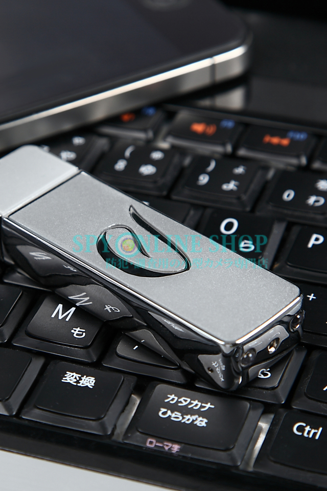

ＵＳＢメモリー型の使い方と特徴
弊社が取り扱っております様々な隠しカメラの特徴をご紹介しております。
是非ともご参考下さいませ・・・！
小型・軽量モデル！
現代社会で必要不可欠なパソコン！そのパソコンのデータを保存、移動させる時皆さんは何を使いますか？
色々な方法がありますが、【ＵＳＢメモリー】を使われる方が多いのではないでしょうか。
パソコンを使う環境にいる方なら、誰が持っていても不自然さはなく、もちろんオフィスなどでも悪目立ちしません！
その為、使う場所を選ぶことなくどこでも自然にお使い頂けるのが特長！
そして当カテゴリーの商品全てが軽くて小型！
一番大きい、重い物でも【45ｇ】、【縦80mm 横25mm 厚み13mm】と手のひらに軽く納まり指でつまめるサイズ！
通常のＵＳＢメモリーと何も変わらないサイズ感なので、カモフラージュ性もばっちりです♪
充電中録画可能モデルも・・！

機能は様々！中には実際にパソコンのＵＳＢポートに直接挿し込んで、充電をしながら録画できるモデルも有ります！
パソコンにＵＳＢメモリーが差さっている日常の光景のまま、電池切れを心配する事無く撮影が可能です！
その他にも【赤外線搭載モデル】や【暗視補正機能搭載モデル】まで・・・！
同じ種類でもカラーバリエーションが豊富なモデルもあります！
希望の用途にピッタリはまるモデルがきっとありますよ・・☆